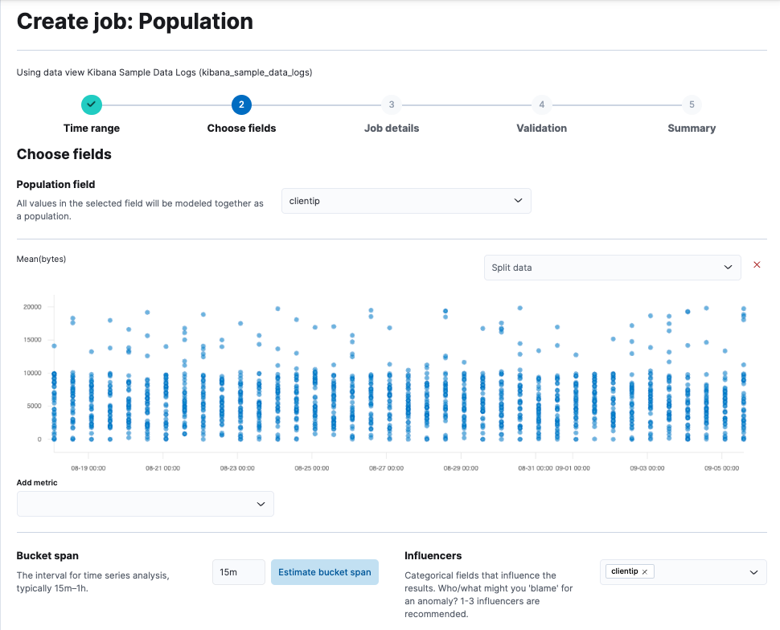

Performing population analysis
editPopulation analysis is a method of detecting anomalies by comparing the behavior of entities or events within a specified population. In this approach, machine learning analytics create a profile of what is considered "typical" behavior for users, machines, or other entities over a specified time period. An entity is considered as anomalous when its behavior deviates from that of the population, indicating abnormal activity compared to the rest of the population.
This type of analysis is most effective when the behavior within a group is generally homogeneous, allowing for the identification of unusual patterns.
However, it is less useful when members of the population show vastly different behaviors.
In such cases, you can segment your data into groups with similar behaviors and run separate jobs for each.
This can be done by using a query filter in the datafeed or by applying the partition_field_name to split the analysis across different groups.
Population analysis is resource-efficient and scales well, enabling the analysis of populations consisting of hundreds of thousands or even millions of entities with a lower resource footprint than analyzing each series individually.
Recommendations
edit- Use population analysis when the behavior within a group is mostly homogeneous, as it helps identify anomalous patterns effectively.
- Leverage population analysis when dealing with large-scale datasets.
- Avoid using population analysis when members of the population exhibit vastly different behaviors, as it may not be effective.
Creating population jobs
edit- In Kibana, navigate to Machine Learning > Anomaly Detection > Jobs.
- Click Create job, select the data view you want to analyze.
- Select the Population wizard from the list.
-
Choose a population field - it’s the
clientipfield in this example - and the metric you want to use for the analysis -Mean(bytes)in this example. - Click Next.
- Provide a job ID and click Next.
- If the validation is successful, click Next to review the summary of the job creation.
- Click Create job.
API example
To specify the population, use the over_field_name property. For example:
PUT _ml/anomaly_detectors/population
{
"description" : "Population analysis",
"analysis_config" : {
"bucket_span":"15m",
"influencers": [
"clientip"
],
"detectors": [
{
"function": "mean",
"field_name": "bytes",
"over_field_name": "clientip"
}
]
},
"data_description" : {
"time_field":"timestamp",
"time_format": "epoch_ms"
}
}
Viewing the job results
editUse the Anomaly Explorer in Kibana to view the analysis results:
The results are often quite sparse. There might be just a few data points for the selected time period. Population analysis is particularly useful when you have many entities and the data for specific entitles is sporadic or sparse. If you click on a section in the timeline or swim lanes, you can see more details about the anomalies:

In this example, the client IP address 167.145.234.154 received a high volume of bytes on the date and time shown.
This event is anomalous because the mean is four times higher than the expected behavior of the population.